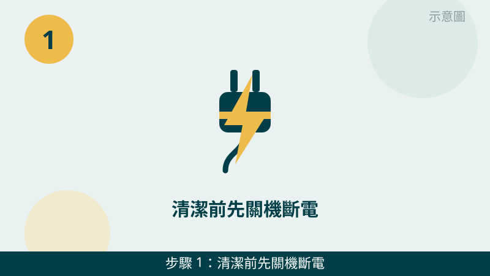
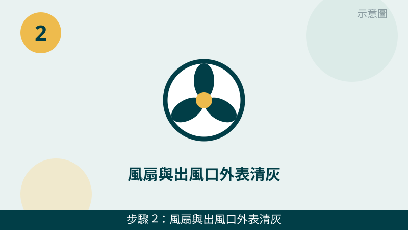
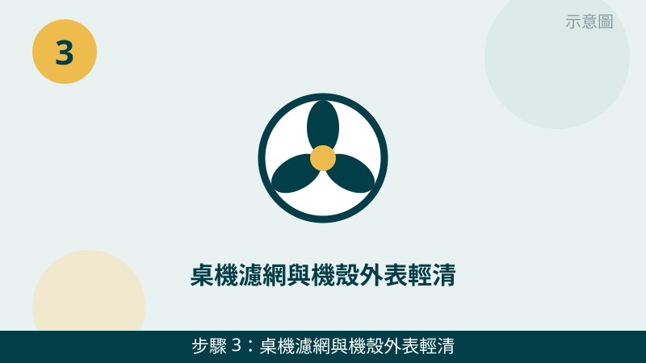
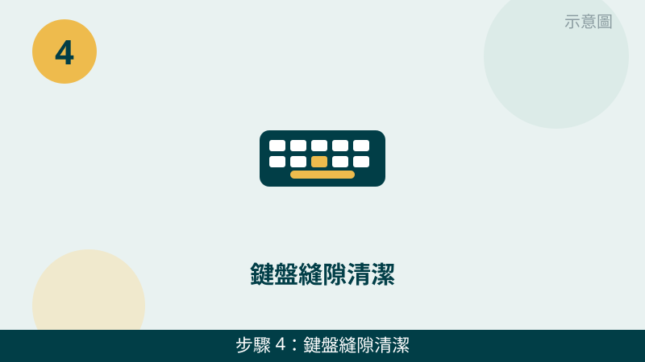
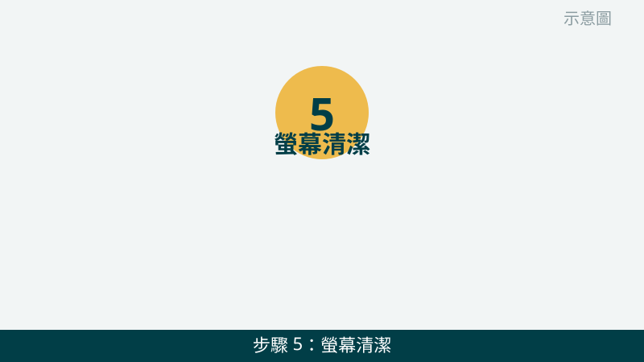
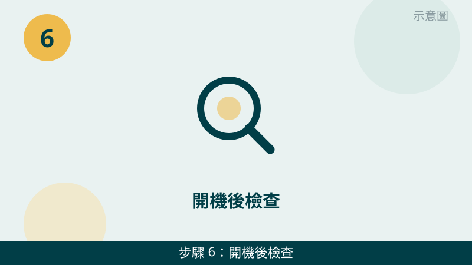

請您放心，日常清潔其實不難，原則只有一個：只清看得到的外表，不要拆進機器裡面。灰塵最常卡在出風口、鍵盤縫和螢幕上，這三個地方清乾淨，風扇聲和溫度通常就會改善不少。
開始之前先跟您說明一個判斷原則：「清完有沒有比較安靜、比較不燙」就是效果指標。清完風扇聲變小、機身沒那麼燙，代表通風有改善；清完完全沒差別，灰塵可能卡在機器裡面，那就要交給技師判斷，不要再往裡面挖。
不確定能不能清，先傳照片給我們看
把出風口、風扇聲的狀況拍下來傳 LINE，拆不拆機、該不該清裡面，先免費評估再決定，不要自己硬拆。
電腦清潔自查清單（6 步）
- 1. 清潔前先關機斷電、等機身冷卻。請先完整關機、拔掉電源線，筆電也請先拔掉充電器，等機身摸起來不燙了再開始清。怎麼判斷：風扇完全停下來、機身回到常溫，就是可以開始的訊號；還在運轉、還燙燙的時候，千萬不要動手清。

示意圖（非官方截圖） - 2. 風扇與出風口外表清灰：用軟毛刷輕刷就好。請先找到出風口的位置，用乾淨的軟毛刷順著同一個方向輕刷，把表面灰塵帶走，再用乾軟布把周圍擦乾淨。怎麼判斷：出風口的灰塵網眼看得清楚了、摸起來沒有厚厚一層灰，就是清好了。提醒您：這一步只清外表就好，灰塵如果在裡面清不到，請先拍照問我們。

示意圖（非官方截圖） - 3. 桌機濾網與機殼外表輕清：濾網可取下才取下。桌機前面或下面的進風濾網如果設計成可以徒手取下，請先取下來用軟毛刷輕刷、把灰塵清掉再裝回去；機殼外表用乾軟布擦乾淨就好。怎麼判斷：濾網透光了、裝回去能平整卡好，就是清好了。如果濾網卡得很緊、取不下來，請不要硬拔，先拍照問我們。

示意圖（非官方截圖） - 4. 鍵盤縫隙清潔：軟毛刷輕刷，不要用水沖。請先把鍵盤倒過來輕輕拍一拍、讓鬆動的碎屑掉出來，再用軟毛刷順著鍵縫輕刷，把卡住的灰塵帶走。怎麼判斷：按鍵縫看得到底了、按起來沒有沙沙的異物感，就是清好了。提醒您：千萬不要用水沖鍵盤，也不要用尖銳物去挖鍵縫，刮傷按鍵或把碎屑推進去反而更難處理。

示意圖（非官方截圖） - 5. 螢幕清潔：軟布輕擦，鍍膜螢幕不要用酒精或粗布硬擦。請先用乾淨的乾軟布輕輕擦掉灰塵，真的有指紋或髒污，再把軟布稍微沾水擰乾後輕擦，最後用乾軟布擦乾。怎麼判斷：螢幕斜著看沒有水痕、沒有一圈一圈的擦痕，就是擦好了。提醒您：如果您的螢幕有鍍膜，請不要用酒精、不要用粗布硬擦，鍍膜擦傷是補不回來的；不確定有沒有鍍膜，請先拍照問我們。

示意圖（非官方截圖） - 6. 開機後檢查：風扇聲、溫度、按鍵、畫面四項都看一下。請先接回電源開機，用個十分鐘感覺一下：風扇是不是比清潔前安靜、機身是不是沒那麼燙、每個按鍵按起來正不正常、螢幕畫面有沒有水痕或擦痕。怎麼判斷：四項都正常，代表這次清潔完成了；風扇還是狂轉、機身還是很燙，灰塵可能在機器裡面，請先拍照問我們，不要再往裡面挖。

示意圖（非官方截圖）
出現這些情況，就別再自己試了
- 清潔前沒有關機斷電——請先關機、拔掉電源線，等機身冷卻再清，帶電清潔很危險
- 想自己拆機清散熱器——請不要自行拆機清散熱器，先拍照問我們，拆壞排線或卡扣反而更貴
- 想用水沖鍵盤、沖主機或沖螢幕——請不要用水沖任何電腦零件，水流進去可能造成短路
- 想用尖銳物挖散熱孔、挖鍵縫——請不要用尖銳物挖，刮傷零件或把碎屑推進去會更難處理
- 螢幕有鍍膜卻想用酒精或粗布硬擦——請不要硬擦，鍍膜擦傷補不回來，不確定就先拍照問我們
- 清潔時聞到燒焦味、看到冒煙，或筆電電池有鼓起——請先停手斷電，先拍照問我們
日常清潔只要照上面 6 步清外表就很夠了，機器裡面的散熱器、風扇葉片深處，交給技師用正確工具處理會更安全。清完如果風扇還是很吵、機身還是很燙，也可能是散熱膏老化或風扇本身老化，這部分就需要實機檢測才能確認。
常見問題
風扇清灰一定要拆機嗎？
不用，日常清潔只要清外表就好。用軟毛刷輕刷出風口、把表面的灰塵帶走，就能改善通風。散熱器在機器裡面，拆機清散熱器有拆壞排線、弄斷卡扣的風險，請先拍照問我們，由技師判斷要不要拆，不要自己硬拆。
螢幕可以用酒精擦嗎？
如果您的螢幕有鍍膜，請不要用酒精或粗布硬擦，鍍膜擦傷了是補不回來的。正確做法是用乾淨的軟布輕擦，真的有指紋或髒污，再把軟布稍微沾水擰乾後輕擦，最後用乾軟布擦乾。不確定您的螢幕有沒有鍍膜，請先拍照問我們。
鍵盤縫隙卡灰塵，可以用水沖嗎？
不可以，千萬不要用水沖鍵盤，水流進去可能造成按鍵失靈或主機板短路。正確做法是關機斷電後，用軟毛刷輕刷鍵縫、把灰塵帶出來，頑固的碎屑用乾淨的軟布輕輕帶走就好。如果已經進水或按鍵失靈，請先關機斷電、不要再開機測試，先拍照問我們。
相關文章：電腦變慢卡頓、開機很久怎麼辦、自救百科總覽